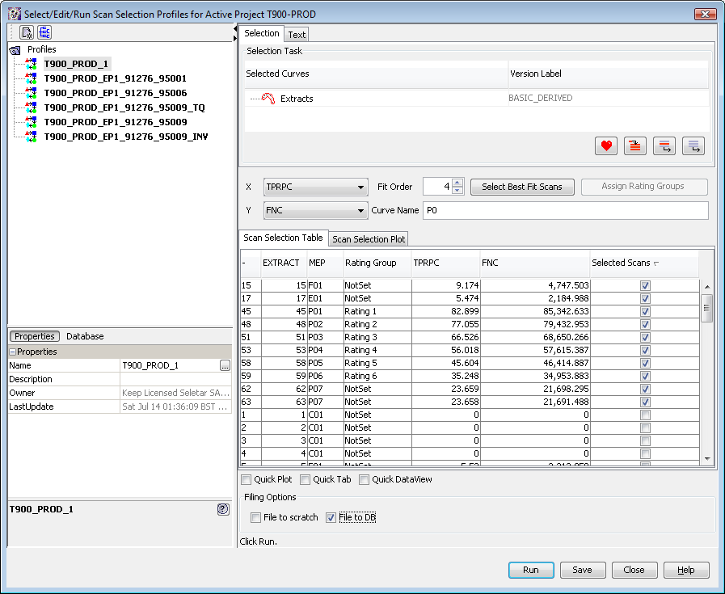
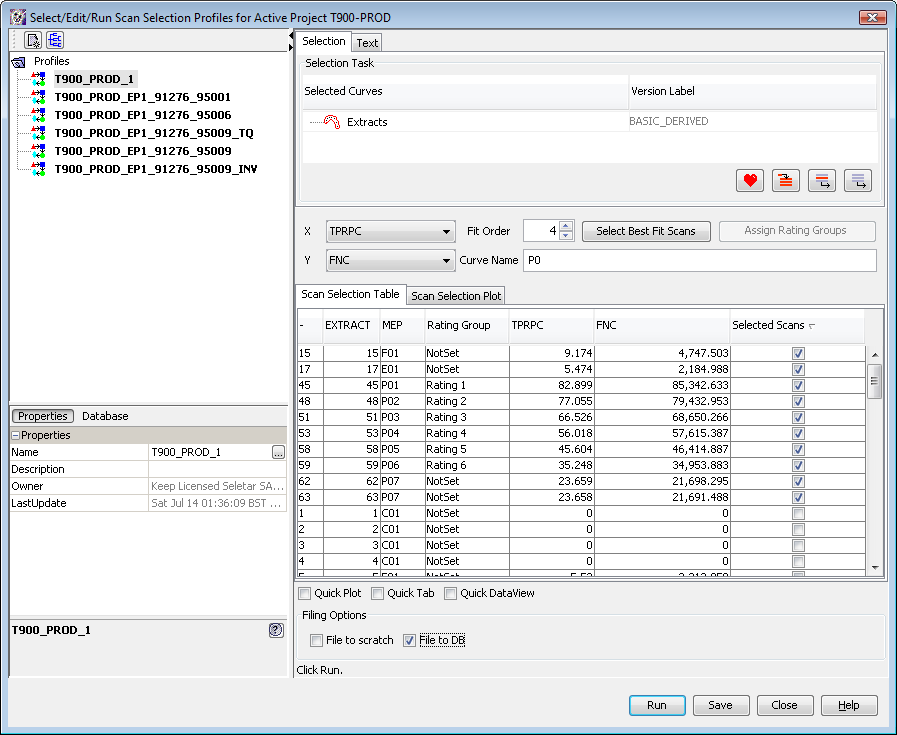

Background
DITA is a documentation[myspecial:fsfdaf:myspecial] tools that can be used to do something really useful.
[myspecial:fsfdaf:myspecial]
DITA is a documentation[myspecial:fsfdaf:myspecial] tools that can be used to do something really useful.
[myspecial:fsfdaf:myspecial]
